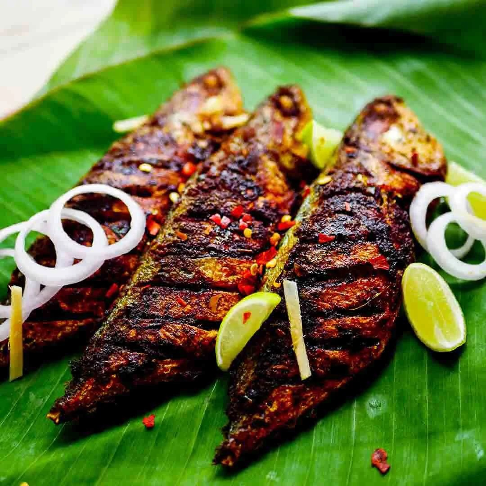
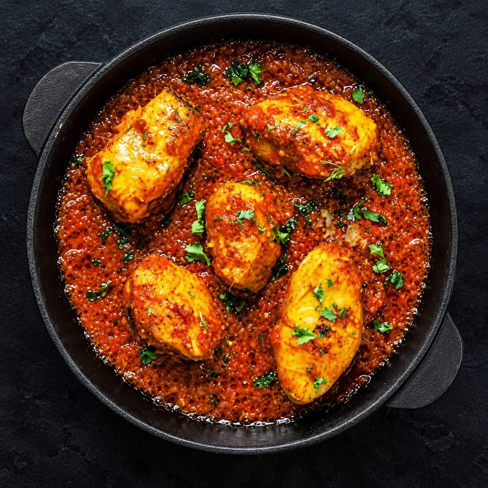
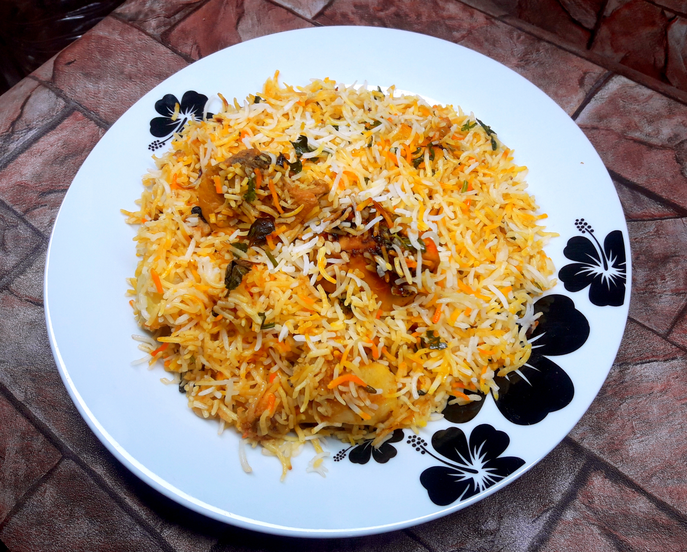
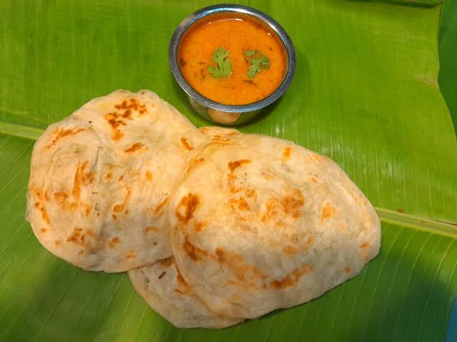
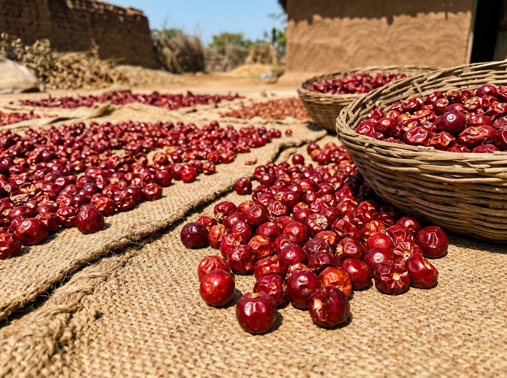

FLAVOURS OF THE COAST
Authentic Maritime Recipes, Native Earthen Pots & Coastal Spices
Scroll to ExploreTHE SIX SIGNATURE FLAVOURS
Explore the six authentic culinary pillars that make dining in Ramanathapuram District an unforgettable experience.
1. SEAFOOD
With the Gulf of Mannar and Palk Bay flanking both shores, seafood in Ramanathapuram is celebrated for exceptional freshness. Vanjaram (seer fish) steaks marinated in coarse sea salt, turmeric, and Ramnad chilli paste are crisped on heavy cast-iron tawas. Coastal mud crabs simmered in black pepper and roasted cumin sauce, and succulent jumbo tiger prawns grilled over tamarind wood coals provide unparalleled coastal depth.

Category 022. MEEN KUZHAMBU
The quintessential Tamil coastal curry, slow-cooked in traditional porous black clay pots (manpaanai). Native shallots (chinna vengayam), fresh garlic pods, and pungent fenugreek seeds are tempered in cold-pressed sesame oil before adding aged tamarind extract and fresh ocean fish steaks. The natural clay breathes during cooking, intensifying the crimson gravy into an elixir that tastes even more extraordinary the next day.

Category 033. BIRIYANI
Distinct from northern long-grain versions, Ramanathapuram biriyani is created with tiny, highly aromatic Seeraga Samba short grains. Infused with gentle maritime spices, fresh mint, coriander, ginger-garlic paste, and tender country mutton or coastal chicken, it is slow-cooked over wood embers in heavy brass handis. Served hot with onion-curd raita and a rich spiced brinjal salna.

Category 044. PAROTTA & SALNA
An inseparable culinary pair revered throughout southern Tamil Nadu. Fresh dough is hand-beaten, stretched paper-thin, coiled into spirals, and grilled golden-brown on smoking cast-iron griddles with ghee. The resulting multilayered, flaky parotta is crushed and completely drenched in steaming, fragrant salna—a velvety gravy simmered with coconut paste, poppy seeds, fennel, and aromatic spices.
5. TEA & COFFEE
The essential beverages fueling coastal mornings and evening sea breezes. Traditional South Indian filter coffee is brewed from freshly roasted dark chicory-blended beans and hot frothy milk, aerated with theatrical meter-long pours between brass davarahs and tumblers. Alongside it, roadside coastal tea stalls simmer strong CTC black tea infused with crushed dry ginger (chukku), cardamom, and holy basil leaves.

Category 066. RAMNAD CHILLI
The globally famous, GI-tagged Ramnad Mundu Chilli (Gundu Milagai). Grown in the arid black-cotton soils of Ramanathapuram, this spherical round chilli features thick, shiny crimson skin with tightly clustered seeds. It is legendary across Chettinad and South Indian kitchens because it imparts a brilliant deep ruby color, intoxicating fragrance, and a balanced, lingering warmth rather than a sharp burning sting.
CRAVING AUTHENTIC RAMANATHAPURAM FOOD?
Visit the bustling street food stalls in Paramakudi, coastal shacks in Rameswaram, and traditional mess eateries across Ramanathapuram.